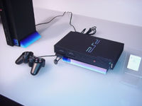
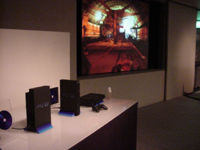
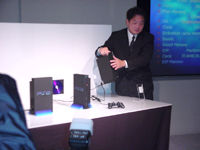
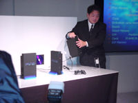

Las patentes de software sólo benefician a las grandes empresas.

La Playstation 2 se murmuró desde que el éxito abarcó a
la Playstation, pero esta consola no llegó a ser una
realidad hasta el Tokio Game Show celebrado en Japón,
donde Sony dió su presentación oficial. Desde esa
presentación no hacen más que salir compañias con sus
planes y juegos para esta consola de debajo de las rocas,
pues la verdad es que con el éxito de la primera
Playstation, los programadores ansian por que su juego
sea un éxito en la nueva consola, porque la consola ya
se sabe que lo será (aún con su elevado precio, porque,
recordemos, lleva DVD con posibilidad de ver películas).
Se encargó de presentarla el mismísimo Ken Kutaragi y
aquí puedes ver las fotos de cuando se produjo tal evento.


 
